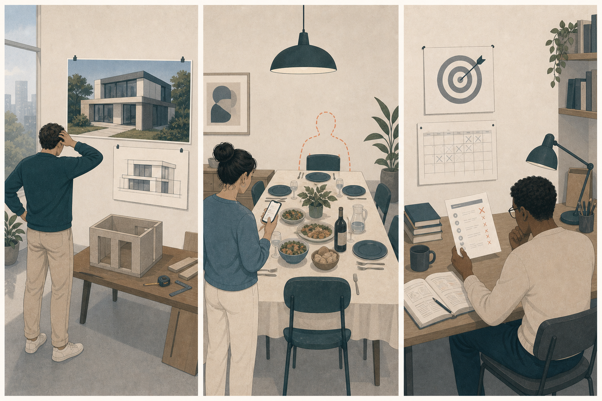

你认真准备了聚会，临时却有多人取消。没有谁明显做错，但结果远低于你的想象。
先判断，再展开
失望更突出。现实没有达到原先期待，个人责任不是必要条件。
OPTIONAL READING · COUNTERFACTUALS
失望比较现实与原先期待，后悔追问“如果我当时换一个选择”，遗憾则更宽：它承认一个珍视的可能性已经失去，却不一定认定自己做错了。三者都向后看，但责任位置不同。
READ FIRST · NAME SECOND
三种体验都会改写现实，但分别改写预期、自己的选择，或一个已经关闭的可能性。
失望更突出。现实没有达到原先期待，个人责任不是必要条件。
后悔更突出。脑中出现一个由自己不同选择产生的更好版本。
遗憾更突出。珍视的可能性已经关闭，其中可能混有悲伤和轻微后悔，但不一定存在明确过错。
EVENT FIRST
结果不如预期、选择看似错误、可能性已经关闭，会形成不同的回看方式。
ONE-MINUTE COMPARISON
我期待的结果没有出现。
降低期待 · 抱怨 · 重新评估如果我当时选择不同，也许会更好。
撤销 · 修补 · 更新下一次选择这个我珍视的可能性已经过去了。
回望 · 哀惜 · 接受不可逆THREE WAYS TO LOOK BACK
区分不是为了选一个最准确的词，而是找出还有什么能被修正。
DISAPPOINTMENT · 现实低于期待
当你原本相信、希望或认为某件事应该达到某种结果，而现实明显低于这个参照点，就会出现失望。它可以针对结果、他人，也可以针对自己。
现实和原先期待之间差了多少，哪项承诺或想象没有兑现。
我以为会更好。事情不该只有这样。我原本真的相信它会发生。
停下投入、重新评估、抱怨或降低期待，也可能再次争取。
我原先期待什么，现实具体在哪一部分没有达到？
天气、运气、能力边界和制度都可能让期待落空。只有在核对原因后，才能判断该修正期待、追究承诺，还是重新行动。

REGRET · 自己的另一选择可能更好
当差结果被部分归因于自己的决定，并且你能想象一个当时可选、现在看来更好的替代行动，就会出现后悔。它把注意力从结果拉回选择。
我当时做了什么，如果改选另一条路径，结果是否可能不同。
早知道就不这样做。如果当时多确认一次，也许不会发生。
撤销、修复、道歉、重新选择，并为未来建立新的决策规则。
我真正想改写的是哪一个选择，它能转成下一次的什么规则？
后悔能帮助比较选择并更新未来行动；当重要信息已经提取、能修的已经修完，继续重复同一反事实就可能变成反刍。
WISTFUL REGRET · 珍视的可能性已经关闭
中文“遗憾”常用来容纳一种更宽的回望：某个自己珍视的人、场景或可能性没有实现，并且随着时间或条件变化已经难以挽回。它可能混有失望、悲伤或后悔。
哪个重要版本没有发生，为什么它现在已经不再可得。
可惜最终没能发生。如果时间和条件不同，也许会有另一个版本。
回望、纪念、补偿尚可保留的部分，并逐渐承认不可逆。
我在惋惜哪个已经关闭的可能性，其中还有什么能够被保留？
它是中文里边界较宽的情绪家族。有时近似温和后悔，有时更接近对未实现可能性的悲伤；需要回到具体句子，而不是把它硬塞进单一定义。
CASE ATLAS
同一件事可能包含多条反事实；把它们拆开，才知道应该调整期待、修正行动，还是面对不可逆。
NEAREST NEIGHBORS
失望只要求期待落空；后悔还要求把更差结果部分归因于自己的选择。
后悔关注选择让自己或局势变差；内疚突出自己的行为违反规范或伤害他人并需要修复。
遗憾可能是温和后悔、对不可逆损失的悲伤，或对未实现可能性的惋惜，必须看具体句子。
问自己：我是在修正期待、修正下一次选择，还是只能承认某个重要可能性已经过去？
MIXED EMOTIONS
你原本相信还有时间，所以推迟了见面；后来情况突然变化，再也没有机会完成那次告别。
现实没有给出原本期待的见面和表达机会。
“如果当时没有推迟”把结果部分连回自己的选择。
无论怎样回想，那次完整告别的可能性已经关闭。
三条评价可以一起存在；修复方式却不同：承认落差、提取选择教训，并为不可逆的部分寻找纪念或替代表达。
RETRIEVAL
先说脑中那句“如果”，再判断它改写了什么。
天气让期待很久的活动取消，没有任何人能够控制。
现实低于期待，但没有必要制造个人责任。
你选了便宜方案，后来维修成本远高于另一方案。
实际选择与未选方案形成明确反事实比较。
一段关系自然结束多年，你并不认为谁做错，却仍惋惜没能一起看到后来的人生。
珍视的共同可能性已失去，但责任和错误不是中心。
你承诺支持朋友却临时忘记，让对方独自承担后果。
违反承诺并影响他人对应内疚；想改写自己的选择对应后悔。
成绩达到原定目标，但你发现另一种复习方法可能更省时间。
结果并不差，更多是在更新策略；只有当未选方案形成明显损失，后悔才更突出。
你反复想“如果当时”，但已经找不到任何新信息，也没有可修复行动。
后悔的学习功能已经用尽，继续重复只在维持自我惩罚。
TRANSFER
目标不是马上释怀，而是把不同问题交给不同处理方式。
我原先期待什么？我实际选择了什么？我珍视的哪个可能性已经关闭？
当新信息、修复与规则都已提取，剩下的遗憾不再是待解题，而是需要被承认的损失。
能改变的部分用于下一次；不能改变的部分不再无限开庭。
WHAT TO EXPECT
不是让过去变得正确，而是知道哪里还能行动，哪里只能承认现实。
TAKEAWAYS
回看过去的目的不一定是惩罚自己；能改变的部分用于更新选择，不能改变的部分则需要逐渐停止审判。
RESEARCH BASIS
研究对 regret 与 disappointment 的区分较成熟；“遗憾”则保留中文日常语义的宽度。
通过反事实思维研究后悔与失望对决策结果的不同反应。
后悔更接近错误决定，失望更接近期望未被证实。
总结后悔发生的条件、对象以及预期与事后调节策略。
比较两类情绪的评价模式，说明相似坏结果如何因责任与反事实结构不同而产生不同体验。
反复出现“如果当时”，不一定意味着反思有效。若回看没有产生新信息、修复或行动，只是一遍遍自我惩罚，它更接近反刍，需要换一种处理方式。